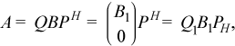

2.1.3.1. gebrd¶
Reduces a general matrix to bidiagonal form. This routine belongs to
the onemkl::lapacknamespace.
Syntax
For real precisions:
-
void
gebrd(queue &exec_queue, std::int64_t m, std::int64_t n, buffer<T, 1> &a, std::int64_t lda, buffer<T, 1> &d, buffer<T, 1> &e, buffer<T, 1> &tauq, buffer<T, 1> &taup, buffer<T, 1> &work, std::int64_t lwork, buffer<std::int64_t, 1> &info)¶
For complex precisions:
-
void
gebrd(queue &exec_queue, std::int64_t m, std::int64_t n, buffer<T, 1> &a, std::int64_t lda, buffer<realT, 1> &d, buffer<realT, 1> &e, buffer<T, 1> &tauq, buffer<T, 1> &taup, buffer<T, 1> &work, std::int64_t lwork, buffer<std::int64_t, 1> &info)¶
gebrd supports the following precisions.
T |
|---|
|
|
|
|
Description
The routine reduces a general m-by-n matrix A to a
bidiagonal matrix B by an orthogonal (unitary) transformation.
If m≥n, the reduction is given by 
where B1 is an n-by-n upper diagonal matrix,
Q and P are orthogonal or, for a complex A, unitary
matrices; Q1 consists of the first n columns of
Q.
If m < n, the reduction is given by
A = Q*B*PH = Q*(B10)*PH = Q1*B1*P1H,
where B1 is an m-by-m lower diagonal matrix,
Q and P are orthogonal or, for a complex A, unitary
matrices; P1 consists of the first m columns of
P.
The routine does not form the matrices Q and P explicitly,
but represents them as products of elementary reflectors. Routines
are provided to work with the matrices Q and P in this
representation:
If the matrix A is real,
to compute
QandPexplicitly, call orgbr.
If the matrix A is complex,
to compute
QandPexplicitly, call ungbr.
Input Parameters
- exec_queue
The queue where the routine should be executed.
- m
The number of rows in the matrix
A(0≤m).- n
The number of columns in the matrix
A(0≤n).- a
The buffer
a, size (lda,*). The bufferacontains the matrixA. The second dimension ofamust be at leastmax(1, m).- lda
The leading dimension of
a.- lwork
The size of the work buffer. Must be computed by gebrd_get_lwork.
Output Parameters
- a
If
m≥n, the diagonal and first super-diagonal of a are overwritten by the upper bidiagonal matrixB. The elements below the diagonal, with the buffer tauq, represent the orthogonal matrixQas a product of elementary reflectors, and the elements above the first superdiagonal, with the buffer taup, represent the orthogonal matrixPas a product of elementary reflectors.If
m<n, the diagonal and first sub-diagonal of a are overwritten by the lower bidiagonal matrixB. The elements below the first subdiagonal, with the buffer tauq, represent the orthogonal matrixQas a product of elementary reflectors, and the elements above the diagonal, with the buffer taup, represent the orthogonal matrixPas a product of elementary reflectors.- d
Buffer, size at least
max(1, min(m,n)). Contains the diagonal elements ofB.- e
Buffer, size at least
max(1, min(m,n) - 1). Contains the off-diagonal elements ofB.- tauq
Buffer, size at least
max(1, min(m, n)). The scalar factors of the elementary reflectors which represent the orthogonal or unitary matrixQ.- taup
Buffer, size at least
max(1, min(m, n)). The scalar factors of the elementary reflectors which represent the orthogonal or unitary matrixP.- work
Buffer of workspace.
- info
Buffer containing error information.
If
info=0, the execution is successful.If
info=-i, thei-th parameter had an illegal value.
Example
An example of how to use gebrdcan be found in the oneMKL
installation directory, under:
examples/sycl/lapack/gebrd.cpp
Parent topic: LAPACK Routines